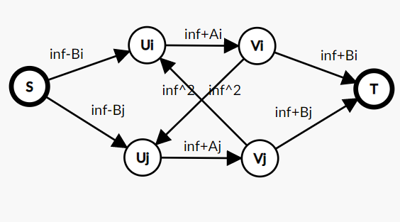

每个细菌都有一个 s s s
最初只有一个细菌。每一天原先的细菌都会生一个孩子，且孩子的 s s s s s s
给定 n n n 2 n 2^n 2 n
判断是否存在一种情况，经过 n n n s s s
n ≤ 1 0 5 , s i ≤ 1 0 9 n \le 10^5,s_i \le 10^9 n ≤ 1 0 5 , s i ≤ 1 0 9
首先最大的数一定是原始细菌的 s s s i i i s s s
然后对于每一天产生的每个细菌都按顺序贪心地选择一个尽可能大的值。
同一天选择的顺序是无关紧要 的，下面给出证明：
考虑第 i i i 相邻 的细菌 a , b a, b a , b A , B ( A < B ) A, B (A < B) A , B ( A < B )
如果让 a a a s s s x , y ( x < y ) x,y(x<y) x , y ( x < y )
若 y < A y < A y < A s s s y , x y,x y , x
由于 a , b a, b a , b 地位 相同，那么选择的顺序也就无关紧要了。
若 y > A y > A y > A
为了方便，把父亲编号为 j ( j < 2 i ) j(j<2^i) j ( j < 2 i ) j + 2 i j+2^i j + 2 i
然后直接按编号顺序确定 s s s multiset 来维护没被选择的 s s s
code
1 2 3 4 5 6 7 8 9 10 11 12 13 14 15 16 17 18 19 20 21 22 23 #include <bits/stdc++.h> #define rep(i, l, r) for(int i = (l); i <= (r); i++) #define per(i, r, l) for(int i = (r); i >= (l); i--) #define mem(a, b) memset(a, b, sizeof a) using namespace std;int main () cin >> n, m = 1 << n; multiset <int , greater <int > > s; For (i, 0 , m) s.insert (read ()); vector <int > c; c.push_back (*s.begin ()), s.erase (s.begin ()); For (i, 0 , m) { For (j, 0 , 1 << i) { auto it = s.upper_bound (c[j]); if (it != s.end ()) c.push_back (*it), s.erase (it); else return puts ("No" ) < 0 ; } } return puts ("Yes" ) < 0 ; return 0 ; }
对于 n × m n\times m n × m 01 01 0 1 m a t mat m a t A , B , C A,B,C A , B , C
A i ( 1 ≤ i ≤ n ) A_i(1\le i \le n) A i ( 1 ≤ i ≤ n ) j j j m a t i , j = 1 mat_{i,j}=1 m a t i , j = 1 m + 1 m+1 m + 1
B i ( 1 ≤ i ≤ m ) B_i(1\le i \le m) B i ( 1 ≤ i ≤ m ) j j j m a t j , i = 1 mat_{j,i}=1 m a t j , i = 1 n + 1 n+1 n + 1
C i ( 1 ≤ i ≤ n ) C_i(1\le i \le n) C i ( 1 ≤ i ≤ n ) j j j m a t j , i = 1 mat_{j,i}=1 m a t j , i = 1 0 0 0
有多少种不同的三元组 ( A , B , C ) (A,B,C) ( A , B , C ) 998244353 998244353 9 9 8 2 4 4 3 5 3
n ≤ 8000 , m ≤ 200 n \le 8000,m\le 200 n ≤ 8 0 0 0 , m ≤ 2 0 0
设 d p m , n dp_{m,n} d p m , n 强制 每行至少有一个黑格时 n × m n\times m n × m
那么答案就是 ∑ i = 0 N ( N i ) d p M , i \sum_{i=0}^N\binom Nidp_{M,i} ∑ i = 0 N ( i N ) d p M , i
转移考虑哪些行的第一个黑格在最后一列，分两种情况：
没有任何一行的第一个黑格在最后一列，那么最后一列可以没有黑格，可以恰好有一个，也可以多于一个，三种的方案对应的情况数分别是 1 , n , ( n 2 ) 1,n,\binom n2 1 , n , ( 2 n ) 1 + n + ( n 2 ) 1+n+\binom n2 1 + n + ( 2 n )
有 k ( k ≥ 1 ) k(k\ge 1) k ( k ≥ 1 ) k k k a a a 倒数 第 b b b a b ab a b
∑ a , b ( a 1 ) ( n − a − b k − 2 ) ( b 1 ) = ( n + 2 k + 2 ) = ( n + 2 n − k ) \sum_{a,b}\binom a1\binom{n-a-b}{k-2}\binom b1=\binom{n+2}{k+2}=\binom{n+2}{n-k}
a , b ∑ ( 1 a ) ( k − 2 n − a − b ) ( 1 b ) = ( k + 2 n + 2 ) = ( n − k n + 2 )
综上，转移式为
d p m , n = d p m − 1 , n ( 1 + n + ( n 2 ) ) + ∑ k = 0 n − 1 d p m − 1 , k ( n + 2 k ) dp_{m,n}=dp_{m-1,n}(1+n+\binom n2)+\sum_{k=0}^{n-1}dp_{m-1,k}\binom{n+2}k
d p m , n = d p m − 1 , n ( 1 + n + ( 2 n ) ) + k = 0 ∑ n − 1 d p m − 1 , k ( k n + 2 )
转移可以使用 NTT 优化，复杂度 O ( N M log N ) O(NM\log N) O ( N M log N )
转移时乘的是组合数，考虑写成 EGF：记 F m ( x ) = ∑ d p m , n x n n ! F_m(x)=\sum dp_{m,n}\frac{x^n}{n!} F m ( x ) = ∑ d p m , n n ! x n
d p m , n = ∑ k = 0 n d p m − 1 , k ( n + 2 k ) − n d p m − 1 , n dp_{m,n}=\sum_{k=0}^ndp_{m-1,k}\binom{n+2}k-ndp_{m-1,n}
d p m , n = k = 0 ∑ n d p m − 1 , k ( k n + 2 ) − n d p m − 1 , n
设
G ( x ) = ∑ n x n n ! ∑ k = 0 n − 2 d p m − 1 , k ( n k ) = F m − 1 ( x ) ( e x − x − 1 ) \begin{aligned}
G(x)&=\sum_n\frac{x^n}{n!}\sum_{k=0}^{n-2}dp_{m-1,k}\binom nk\\
&=F_{m-1}(x)(e^x-x-1)
\end{aligned}
G ( x ) = n ∑ n ! x n k = 0 ∑ n − 2 d p m − 1 , k ( k n ) = F m − 1 ( x ) ( e x − x − 1 )
那么把 G ( x ) G(x) G ( x ) x n n ! \frac{x^n}{n!} n ! x n 2 2 2 x n n ! \frac{x^n}{n!} n ! x n
易得第二部分为 − x F m − 1 ′ ( x ) -xF_{m-1}'(x) − x F m − 1 ′ ( x )
得到 F m ( x ) F_m(x) F m ( x )
F m ( x ) = ( F m − 1 ( x ) ( e x − 1 − x ) ) ′ ′ − x F m − 1 ′ ( x ) F_m(x)=(F_{m-1}(x)(e^x-1-x))''-xF_{m-1}'(x)
F m ( x ) = ( F m − 1 ( x ) ( e x − 1 − x ) ) ′ ′ − x F m − 1 ′ ( x )
由于这个转移式中 F m − 1 ( x ) F_{m-1}(x) F m − 1 ( x ) e x , x e^x,x e x , x x x x F m ( x ) F_m(x) F m ( x ) ∑ a , b f a , b e a x x b \sum_{a,b}f_{a,b}e^{ax}x^b ∑ a , b f a , b e a x x b F m ′ ( x ) F_m'(x) F m ′ ( x ) e x e^x e x x x x F m ( x ) F_m(x) F m ( x ) F m ( x ) F_m(x) F m ( x ) e x e^x e x x x x F m − 1 ( x ) F_{m-1}(x) F m − 1 ( x ) e x e^x e x x x x 1 1 1 m m m
在 ∑ a , b f a , b e a x x b \sum_{a,b}f_{a,b}e^{ax}x^b ∑ a , b f a , b e a x x b e x , x e^x,x e x , x O ( m 2 ) O(m^2) O ( m 2 ) F m − 1 ( x ) F_{m-1}(x) F m − 1 ( x ) F m ( x ) F_m(x) F m ( x ) ∑ a , b f a , b e a x x b \sum_{a,b}f_{a,b}e^{ax}x^b ∑ a , b f a , b e a x x b
最后考虑算答案，设 F M ( x ) = ∑ a , b f a , b e a x x b F_M(x)=\sum_{a,b}f_{a,b}e^{ax}x^b F M ( x ) = ∑ a , b f a , b e a x x b
∑ i = 0 N ( N i ) d p M , i = ∑ i = 0 N ( N i ) [ x i i ! ] F M ( x ) = [ x N N ! ] e x F M ( x ) = N ! ∑ a = 0 M ∑ b = 0 min ( N , M ) f a , b ( a + 1 ) N − b ( N − b ) ! = ∑ a = 0 M ∑ b = 0 min ( N , M ) f a , b ( a + 1 ) N − b N b ‾ \begin{aligned}
&\sum_{i=0}^N\binom Nidp_{M,i}\\
=&\sum_{i=0}^N\binom Ni\left[\frac{x^i}{i!}\right]F_M(x)\\
=&\left[\frac{x^N}{N!}\right]e^xF_M(x)\\
=&N!\sum_{a=0}^M\sum_{b=0}^{\min(N,M)}f_{a,b}\frac{(a+1)^{N-b}}{(N-b)!}\\
=&\sum_{a=0}^M\sum_{b=0}^{\min(N,M)}f_{a,b}(a+1)^{N-b}N^{\underline b}
\end{aligned}
= = = = i = 0 ∑ N ( i N ) d p M , i i = 0 ∑ N ( i N ) [ i ! x i ] F M ( x ) [ N ! x N ] e x F M ( x ) N ! a = 0 ∑ M b = 0 ∑ m i n ( N , M ) f a , b ( N − b ) ! ( a + 1 ) N − b a = 0 ∑ M b = 0 ∑ m i n ( N , M ) f a , b ( a + 1 ) N − b N b
计算答案复杂度 O ( M 2 log N ) O(M^2\log N) O ( M 2 log N ) O ( M 2 + M log N ) O(M^2+M\log N) O ( M 2 + M log N ) O ( M 3 ) O(M^3) O ( M 3 )
容易想到用位向量来表示折线，0 0 0 1 1 1 2 N − 1 2^{N-1} 2 N − 1
由于相邻两条折线 S , T S,T S , T T T T S S S
不难想到轮廓线 DP，设 f i , j , k , S f_{i,j,k,S} f i , j , k , S
第 i i i j j j
S S S j j j i i i N − 1 − j N-1-j N − 1 − j i − 1 i-1 i − 1 第 i − 1 i-1 i − 1 j j j k k k
转移就枚举第 i i i j + 1 j+1 j + 1
复杂度 O ( n 3 2 n ) O(n^32^n) O ( n 3 2 n )
再次考虑相邻两条折线 S , T S,T S , T S S S T T T
重新定义 DP 状态 f i , j , S f_{i,j,S} f i , j , S i i i S S S j j j 1 1 1
转移为：
如果存在第 j + 1 j+1 j + 1 1 1 1 1 1 1 O ( 1 ) O(1) O ( 1 )
如果不存在，要么确定第 i i i 1 1 1 0 0 0 1 1 1 O ( 1 ) O(1) O ( 1 )
当确定第 i i i 0 0 0
复杂度 O ( n 2 2 n ) O(n^22^n) O ( n 2 2 n )
考虑从 1 − n 1-n 1 − n
把这条唯一路径上的边都断开后路径上的点两两不连通。
假设知道这条唯一路径是 u 1 , u 2 , ⋯ , u k u_1,u_2,\cdots,u_k u 1 , u 2 , ⋯ , u k u 1 = 1 , u k = n u_1=1,u_k=n u 1 = 1 , u k = n k k k i i i u k u_k u k
可以得到一个状压做法：
设 g S g_S g S S S S
设 f S f_S f S S S S
转移为：f S ← f S − T + g T ( T ⊆ S ) f_S \leftarrow f_{S-T} + g_T({T \subseteq S}) f S ← f S − T + g T ( T ⊆ S ) T T T
由于并不知道这条路径，所以需要改一下 DP 状态：
设 f i , S f_{i,S} f i , S S S S 1 − i 1-i 1 − i
转移为:
f i , S ∪ { i } ← f j , S + w ( j , i ) ( j ∉ S ) f_{i,S \cup \{i\}} \leftarrow f_{j,S} + w(j,i)(j \not\in S) f i , S ∪ { i } ← f j , S + w ( j , i ) ( j ∈ S ) f i , S ∪ T ← f i , S + g T ∪ { i } ( S ∩ T = ∅ ) f_{i,S\cup T} \leftarrow f_{i,S}+g_{T\cup\{i\}}(S \cap T = \varnothing) f i , S ∪ T ← f i , S + g T ∪ { i } ( S ∩ T = ∅ )
复杂度 O ( n 3 n ) O(n3^n) O ( n 3 n )
由于一个连通块的贡献带有绝对值符号，不太好处理，变成枚举符号不会影响答案。
现在变成如下问题：
每个点有三种状态：正、负、删，代价分别为 − B i , A i , B i -B_i,A_i,B_i − B i , A i , B i
对于相邻的点 u , v u,v u , v
求最小代价。
想到最小割模型，由于每个点有三种状态，所以把每个点 i i i U i , V i U_i,V_i U i , V i
用 ( S , U i ) , ( U i , V i ) , ( V i , T ) (S,U_i),(U_i,V_i),(V_i,T) ( S , U i ) , ( U i , V i ) , ( V i , T )
令它们的代价分别为 ∞ − B i , ∞ + A i , ∞ + B i \infty-B_i,\infty+A_i,\infty+B_i ∞ − B i , ∞ + A i , ∞ + B i
对于相邻的点 ( i , j ) (i,j) ( i , j )
不能同时割 ( S , U i ) , ( V j , T ) (S,U_i),(V_j,T) ( S , U i ) , ( V j , T ) ( S , U i ) (S,U_i) ( S , U i ) U i U_i U i T T T ( V j , T ) (V_j,T) ( V j , T ) S S S V j V_j V j ( V j , U i ) (V_j,U_i) ( V j , U i ) ∞ 2 \infty^2 ∞ 2
不能同时割 ( S , U j ) , ( V i , T ) (S,U_j),(V_i,T) ( S , U j ) , ( V i , T ) ( V i , U j ) (V_i,U_j) ( V i , U j ) ∞ 2 \infty^2 ∞ 2
最后答案为最小割减去 n ∞ n\infty n ∞

先考虑一个弱化版问题：B i = 1 B_i=1 B i = 1
这是一个经典问题，一般做法有两种：状压 DP 和 min-max 容斥。
它们的复杂度都是 O ( n 2 n ) O(n2^n) O ( n 2 n ) O ( 2 n ) O(2^n) O ( 2 n ) 400 400 4 0 0
通过 min-max 容斥可以得出答案为
∑ S ( − 1 ) ∣ S ∣ + 1 ∑ i = 1 n A i ∑ i ∈ S A i \sum_{S}(-1)^{|S|+1}\frac{\sum_{i=1}^n A_i}{\sum_{i \in S} A_i}
S ∑ ( − 1 ) ∣ S ∣ + 1 ∑ i ∈ S A i ∑ i = 1 n A i
发现分母是小于 400 400 4 0 0 ∑ S ( − 1 ) ∣ S ∣ + 1 \sum_S(-1)^{|S|+1} ∑ S ( − 1 ) ∣ S ∣ + 1
设
f i , j = ∑ S ⊆ { 1 , 2 , ⋯ , i } ( − 1 ) ∣ S ∣ + 1 [ ∑ i ∈ S A i = j ] f_{i,j} = \sum_{S \subseteq \{1,2,\cdots,i\}}(-1)^{|S|+1}[\sum_{i \in S}A_i=j]
f i , j = S ⊆ { 1 , 2 , ⋯ , i } ∑ ( − 1 ) ∣ S ∣ + 1 [ i ∈ S ∑ A i = j ]
转移为 f i , j = f i − 1 , j − f i − 1 , j − A i f_{i,j}=f_{i-1,j}-f_{i-1,j-A_i} f i , j = f i − 1 , j − f i − 1 , j − A i
( ∑ i = 1 n A i ) ∑ i = 0 400 f n , i i (\sum_{i=1}^n A_i)\sum_{i=0}^{400}\frac{f_{n,i}}i
( i = 1 ∑ n A i ) i = 0 ∑ 4 0 0 i f n , i
现在回到原问题，还是考虑 min-max 容斥，答案就是
∑ S ( − 1 ) ∣ S ∣ + 1 [ S \sum_{S}(-1)^{|S|+1}[S ∑ S ( − 1 ) ∣ S ∣ + 1 [ S ] ] ]
设 p i = A i ∑ j ∈ S A j p_i=\frac{A_i}{\sum_{j \in S}A_j} p i = ∑ j ∈ S A j A i
根据期望的线性性质，期望步数可以分摊到经过每个状态上。所以后面那坨东西为：
∑ ∀ i ∈ S , c i < B i [ \sum_{\forall i \in S,c_i<B_i}[ ∑ ∀ i ∈ S , c i < B i [ c c c ] ⋅ [ ]\cdot[ ] ⋅ [ c c c ] ] ]
= ∑ ∀ i ∈ S , c i < B i ( ∑ i ∈ S c i ) ! ∏ i ∈ S c i ! ∏ i ∈ S p i c i ⋅ ∑ i = 1 n A i ∑ i ∈ S A i = ∑ ∀ i ∈ S , c i < B i ( ∑ i ∈ S c i ) ! ∏ i ∈ S c i ! ∏ i ∈ S A i c i ⋅ ∑ i = 1 n A i ( ∑ i ∈ S A i ) ( ∑ i ∈ S c i ) + 1 \begin{aligned}
&=\sum_{\forall i \in S,c_i<B_i}\frac{(\sum_{i \in S}c_i)!}{\prod_{i \in S} c_i!}\prod_{i \in S}p_i^{c_i} \cdot \frac{\sum_{i=1}^n A_i}{\sum_{i \in S} A_i}\\
&=\sum_{\forall i \in S,c_i<B_i}\frac{(\sum_{i \in S}c_i)!}{\prod_{i \in S} c_i!}\prod_{i \in S}A_i^{c_i} \cdot \frac{\sum_{i=1}^n A_i}{(\sum_{i \in S} A_i)^{(\sum_{i \in S}c_i)+1}}
\end{aligned}
= ∀ i ∈ S , c i < B i ∑ ∏ i ∈ S c i ! ( ∑ i ∈ S c i ) ! i ∈ S ∏ p i c i ⋅ ∑ i ∈ S A i ∑ i = 1 n A i = ∀ i ∈ S , c i < B i ∑ ∏ i ∈ S c i ! ( ∑ i ∈ S c i ) ! i ∈ S ∏ A i c i ⋅ ( ∑ i ∈ S A i ) ( ∑ i ∈ S c i ) + 1 ∑ i = 1 n A i
把前面说的东西拼起来，答案为：
∑ S ( − 1 ) ∣ S ∣ + 1 ∑ ∀ i ∈ S , c i < B i ( ∑ i ∈ S c i ) ! ∏ i ∈ S c i ! ∏ i ∈ S A i c i ⋅ ∑ i = 1 n A i ( ∑ i ∈ S A i ) ( ∑ i ∈ S c i ) + 1 = ( ∑ i = 1 n A i ) ∑ S ( − 1 ) ∣ S ∣ + 1 ∑ ∀ i ∈ S , c i < B i ( ∑ i ∈ S c i ) ! ( ∑ i ∈ S A i ) ( ∑ i ∈ S c i ) + 1 ⋅ ∏ i ∈ S A i c i c i ! \begin{aligned}
&\sum_S(-1)^{|S|+1}\sum_{\forall i \in S,c_i<B_i}\frac{(\sum_{i \in S}c_i)!}{\prod_{i \in S} c_i!}\prod_{i \in S}A_i^{c_i} \cdot \frac{\sum_{i=1}^n A_i}{(\sum_{i \in S} A_i)^{(\sum_{i \in S}c_i)+1}}\\
&=(\sum_{i=1}^n A_i)\sum_S(-1)^{|S|+1}\sum_{\forall i \in S,c_i<B_i}\frac{(\sum_{i \in S}c_i)!}{(\sum_{i \in S} A_i)^{(\sum_{i \in S}c_i)+1}} \cdot \prod_{i \in S}\frac{A_i^{c_i}}{c_i!}
\end{aligned}
S ∑ ( − 1 ) ∣ S ∣ + 1 ∀ i ∈ S , c i < B i ∑ ∏ i ∈ S c i ! ( ∑ i ∈ S c i ) ! i ∈ S ∏ A i c i ⋅ ( ∑ i ∈ S A i ) ( ∑ i ∈ S c i ) + 1 ∑ i = 1 n A i = ( i = 1 ∑ n A i ) S ∑ ( − 1 ) ∣ S ∣ + 1 ∀ i ∈ S , c i < B i ∑ ( ∑ i ∈ S A i ) ( ∑ i ∈ S c i ) + 1 ( ∑ i ∈ S c i ) ! ⋅ i ∈ S ∏ c i ! A i c i
式子中比较难转移的东西就是 ∑ i ∈ S A i \sum_{i \in S} A_i ∑ i ∈ S A i ∑ i ∈ S c i \sum_{i \in S}c_i ∑ i ∈ S c i
状态为
f i , j , k = ∑ S ⊆ { 1 , 2 , ⋯ , i } ( − 1 ) ∣ S ∣ + 1 ∑ ∀ i ∈ S , c i < B i ∏ i ∈ S A i c i c i ! [ ∑ i ∈ S A i = j ∧ ∑ i ∈ S c i = k ] f_{i,j,k}=\sum_{S \subseteq \{1,2,\cdots,i\}}(-1)^{|S|+1}\sum_{\forall i \in S,c_i<B_i}\prod_{i \in S}\frac{A_i^{c_i}}{c_i!}[\sum_{i \in S} A_i=j \land \sum_{i \in S}c_i=k]
f i , j , k = S ⊆ { 1 , 2 , ⋯ , i } ∑ ( − 1 ) ∣ S ∣ + 1 ∀ i ∈ S , c i < B i ∑ i ∈ S ∏ c i ! A i c i [ i ∈ S ∑ A i = j ∧ i ∈ S ∑ c i = k ]
转移为
f i , j , k = f i − 1 , j , k − ∑ c = 0 B i − 1 f i − 1 , j − A i , k − c A i c c ! f_{i,j,k}=f_{i-1,j,k}-\sum_{c=0}^{B_i-1}f_{i-1,j-A_i,k-c}\frac{A_i^c}{c!}
f i , j , k = f i − 1 , j , k − c = 0 ∑ B i − 1 f i − 1 , j − A i , k − c c ! A i c
答案为
( ∑ i = 1 n A i ) ∑ i = 1 400 ∑ j = 0 400 j ! f n , i , j i j + 1 (\sum_{i=1}^n A_i)\sum_{i=1}^{400}\sum_{j=0}^{400}\frac{j!f_{n,i,j}}{i^{j+1}}
( i = 1 ∑ n A i ) i = 1 ∑ 4 0 0 j = 0 ∑ 4 0 0 i j + 1 j ! f n , i , j
分析一下时间复杂度，虽然每次转移的枚举量是 B i B_i B i ∑ i = 1 n B i \sum_{i=1}^nB_i ∑ i = 1 n B i O ( n ) O(n) O ( n ) O ( n 3 ) O(n^3) O ( n 3 ) O ( n 2 ) O(n^2) O ( n 2 )
考虑第三次操作前第 i i i ( i − 1 ) m + 1 (i-1)m+1 ( i − 1 ) m + 1 i m im i m ( i − 1 ) m + 1 (i-1)m+1 ( i − 1 ) m + 1 i m im i m i i i
第二次操作的目标就是使颜色为 i i i i i i n n n
先考虑如何确定第一列的颜色，这显然是一个行与颜色的完美匹配问题。由于任意选 i i i i i i i i i
然后第二三次操作就非常简单了，复杂度 O ( n 4 ) O(n^4) O ( n 4 )
UPD: 这本质是正则二分图匹配问题，有 O ( n 2 log n ) O(n^2\log n) O ( n 2 log n )
考虑什么样的排列 P P P
考虑构造过程：每次选择一个头元素最小的序列 A i A_i A i A i A_i A i
这启发我们把同时删除的元素看成一段，分段具有如下性质：
每一段是长度不超过 3 3 3
每一段的头元素递增。
长度为 1 1 1 2 2 2 2 2 2 1 1 1 A i A_i A i
同时，只要满足上面三个条件，这个 P P P P P P A A A
由于 P P P
枚举长度分别为 1 , 2 , 3 1,2,3 1 , 2 , 3 c n t 1 , c n t 2 , c n t 3 cnt_1,cnt_2,cnt_3 c n t 1 , c n t 2 , c n t 3 c n t 1 + 2 c n t 2 + 3 c n t 3 = 3 n cnt_1+2cnt_2+3cnt_3=3n c n t 1 + 2 c n t 2 + 3 c n t 3 = 3 n c n t 1 ≥ c n t 2 cnt_1 \ge cnt_2 c n t 1 ≥ c n t 2
贡献即为
( c n t 1 + c n t 2 + c n t 3 c n t 1 , c n t 2 , c n t 3 ) ( 3 n ) ! ( c n t 1 + c n t 2 + c n t 3 ) ! 2 c n t 2 3 c n t 3 \binom{cnt_1+cnt_2+cnt_3}{cnt_1,cnt_2,cnt_3}\frac{(3n)!}{(cnt_1+cnt_2+cnt_3)!2^{cnt_2}3^{cnt_3}}
( c n t 1 , c n t 2 , c n t 3 c n t 1 + c n t 2 + c n t 3 ) ( c n t 1 + c n t 2 + c n t 3 ) ! 2 c n t 2 3 c n t 3 ( 3 n ) !
前面的组合数是划分出每一段的方案数，除以 ( c n t 1 + c n t 2 + c n t 3 ) ! (cnt_1+cnt_2+cnt_3)! ( c n t 1 + c n t 2 + c n t 3 ) ! 2 c n t 2 3 c n t 3 2^{cnt_2}3^{cnt_3} 2 c n t 2 3 c n t 3
复杂度 O ( n 2 ) O(n^2) O ( n 2 )
考虑如何描述一个非负凸序列。
枚举最小值 c c c i i i A = ( c , c , ⋯ , c ) A=(c,c,\cdots,c) A = ( c , c , ⋯ , c )
多次选一个位置 j < i j<i j < i A j , A j − 1 , A j − 2 , ⋯ , A 1 A_j,A_{j-1},A_{j-2},\cdots,A_1 A j , A j − 1 , A j − 2 , ⋯ , A 1 1 , 2 , 3 , ⋯ , j 1,2,3,\cdots,j 1 , 2 , 3 , ⋯ , j
多次选一个位置 j > i j>i j > i A j , A j + 1 , A j + 2 , ⋯ , A n A_j,A_{j+1},A_{j+2},\cdots,A_n A j , A j + 1 , A j + 2 , ⋯ , A n 1 , 2 , 3 , ⋯ , n − j + 1 1,2,3,\cdots,n-j+1 1 , 2 , 3 , ⋯ , n − j + 1 i > 1 i>1 i > 1 i − 1 i-1 i − 1
第三步可以事先选 i − 1 i-1 i − 1 i ( i − 1 ) 2 \frac {i(i-1)}2 2 i ( i − 1 )
先枚举 i i i O ( m ) O(\sqrt m) O ( m ) O ( m m ) O(m\sqrt m) O ( m m ) O ( m n ) O(\frac mn) O ( n m ) c c c
这样做的复杂度为 O ( n m m ) O(nm\sqrt m) O ( n m m )
考虑 i → i + 1 i \rightarrow i+1 i → i + 1 O ( m ) O(\sqrt m) O ( m ) O ( m m ) O(m\sqrt m) O ( m m )
设 f i , a , b , j f_{i,a,b,j} f i , a , b , j j j j
有 a a a i i i
有 b b b i + 1 i+1 i + 1
转移就枚举这 a a a f i , 0 , b , j = f i + 1 , b , 0 , j f_{i,0,b,j}=f_{i+1,b,0,j} f i , 0 , b , j = f i + 1 , b , 0 , j
f i , a , b , j = w i n ⋅ f i , a − 1 , b , j − [ j > b ] + l o s t ⋅ f i , a − 1 , b + 1 , j ( j ≠ b + 1 ) f_{i,a,b,j}=win \cdot f_{i,a-1,b,j-[j>b]} + lost \cdot f_{i,a-1,b+1,j}(j\ne b+1) f i , a , b , j = w i n ⋅ f i , a − 1 , b , j − [ j > b ] + l o s t ⋅ f i , a − 1 , b + 1 , j ( j = b + 1 ) f i , a , b , b + 1 = w i n + l o s t ⋅ f i , a − 1 , b + 1 , b + 1 ( j ≤ b ) f_{i,a,b,b+1}=win + lost \cdot f_{i,a-1,b+1,b+1}(j\le b) f i , a , b , b + 1 = w i n + l o s t ⋅ f i , a − 1 , b + 1 , b + 1 ( j ≤ b )
复杂度 O ( n 4 ) O(n^4) O ( n 4 )
考虑任意 k k k k + 1 k+1 k + 1 ⌈ n 2 ⌉ \lceil\frac n2\rceil ⌈ 2 n ⌉ ⌈ n 2 ⌉ − 1 \lceil\frac n2\rceil-1 ⌈ 2 n ⌉ − 1
考虑如何生成一个合法的序列 A A A
枚举第 ⌊ n 2 ⌋ + 1 \lfloor\frac n2\rfloor+1 ⌊ 2 n ⌋ + 1 c c c A = ( c , c , ⋯ , c ) A=(c,c,\cdots,c) A = ( c , c , ⋯ , c )
多次选一个位置 j < ⌊ n 2 ⌋ + 1 j<\lfloor\frac n2\rfloor+1 j < ⌊ 2 n ⌋ + 1 A 1 , A 2 , ⋯ , A j A_1,A_2,\cdots,A_j A 1 , A 2 , ⋯ , A j
多次选一个位置 j > ⌊ n 2 ⌋ + 1 j>\lfloor\frac n2\rfloor+1 j > ⌊ 2 n ⌋ + 1 A j , A j + 1 , ⋯ , A n A_j,A_{j+1},\cdots,A_n A j , A j + 1 , ⋯ , A n
由于 A 1 ≥ 1 A_1 \ge 1 A 1 ≥ 1 c − 1 c-1 c − 1 n − c n-c n − c
设前 ⌈ n 2 ⌉ \lceil\frac n2\rceil ⌈ 2 n ⌉ ⌈ n 2 ⌉ − 1 \lceil\frac n2\rceil-1 ⌈ 2 n ⌉ − 1 x x x x = c x=c x = c x x x j j j x x x n − j + 1 n-j+1 n − j + 1 c c c
可以看出这是一个完全背包，第二种操作就是添加体积为 1 , 2 , ⋯ , ⌊ n 2 ⌋ 1,2,\cdots,\lfloor\frac n2\rfloor 1 , 2 , ⋯ , ⌊ 2 n ⌋ c − 1 c-1 c − 1 1 , 2 , ⋯ , ⌈ n 2 ⌉ − 1 1,2,\cdots,\lceil\frac n2\rceil-1 1 , 2 , ⋯ , ⌈ 2 n ⌉ − 1 n − c n-c n − c c c c
对于第二种操作，考虑预处理 L i , j L_{i,j} L i , j i i i j j j
L i , j = L i − 1 , j − 1 + L i , j − i − L i − 1 , j − i − ⌊ n 2 ⌋ L_{i,j}=L_{i-1,j-1}+L_{i,j-i}-L_{i-1,j-i-\lfloor\frac n2\rfloor}
L i , j = L i − 1 , j − 1 + L i , j − i − L i − 1 , j − i − ⌊ 2 n ⌋
对于第三种操作，同理可以预处理 R i , j R_{i,j} R i , j
然后就可以枚举 c c c O ( n ) O(n) O ( n )
复杂度 O ( n 2 ) O(n^2) O ( n 2 )
构造的思路是先黑白染色，然后填好黑格，再让每个白格满足：
它大于周围四个黑格。
它模周围四个黑格都等于 1 1 1
填白格的过程是容易的，对于一个白格，先算出周围四个黑格的 lcm \text{lcm} lcm lcm + 1 \text{lcm}+1 lcm + 1 2 lcm + 1 , 3 lcm + 1 , ⋯ 2\text{lcm}+1,3\text{lcm}+1,\cdots 2 lcm + 1 , 3 lcm + 1 , ⋯
如果没有值域限制，这题就做完了，考虑怎样让填的数尽可能小。
填白格没有什么好优化的（尝试过优先填 lcm \text{lcm} lcm lcm \text{lcm} lcm
填法一：顺序填或随机填，大概只能构造 N N N
填法二：考虑到一个白格周围四个黑格有两个是同一行的，有两个是同一列的，令 A i , j A_{i,j} A i , j lcm(i,j) \text{lcm(i,j)} lcm(i,j) N N N
填法三：考虑到一个白格周围四个黑格只涉及四条斜线，令 A i , j A_{i,j} A i , j lcm ( i + j , i − j + n ) \text{lcm}(i+j,i-j+n) lcm ( i + j , i − j + n ) N N N 425 425 4 2 5
填法四：经过一番尝试，令 A i , j A_{i,j} A i , j lcm ( i + ( n − j + 1 ) , i − ( n − j + 1 ) + n ) \text{lcm}(i+(n-j+1),i-(n-j+1)+n) lcm ( i + ( n − j + 1 ) , i − ( n − j + 1 ) + n )
填发五：考虑给每条斜线分配一个质数，黑格就等于所在的两条斜线质数的乘积，白格就等于周围四条斜线质数的乘积加一，一定不会有数重复。
填发四需要用 set 维护哪些数填过，复杂度 O ( n 2 log n ) O(n^2\log n) O ( n 2 log n )
填发五复杂度 O ( n 2 ) O(n^2) O ( n 2 )
对于两个距离为 D \sqrt D D ( x 1 , y 1 ) , ( x 2 , y 2 ) (x_1,y_1),(x_2,y_2) ( x 1 , y 1 ) , ( x 2 , y 2 ) x 1 − x 2 , y 1 − y 2 x_1-x_2,y_1-y_2 x 1 − x 2 , y 1 − y 2
x 1 ≡ x 2 ( m o d 2 ) , y 1 ≡ y 2 ( m o d 2 ) ⟺ D ≡ 0 ( m o d 4 ) x 1 ≡ x 2 ( m o d 2 ) , y 1 ≢ y 2 ( m o d 2 ) ⟺ D ≡ 1 ( m o d 4 ) x 1 ≢ x 2 ( m o d 2 ) , y 1 ≢ y 2 ( m o d 2 ) ⟺ D ≡ 2 ( m o d 4 ) \begin{aligned}
x_1 &\equiv x_2 \pmod 2,y_1 \equiv y_2 \pmod 2 \iff D \equiv 0 \pmod 4\\
x_1 &\equiv x_2 \pmod 2,y_1 \not\equiv y_2 \pmod 2 \iff D \equiv 1 \pmod 4\\
x_1 &\not\equiv x_2 \pmod 2,y_1 \not\equiv y_2 \pmod 2 \iff D \equiv 2 \pmod 4
\end{aligned}
x 1 x 1 x 1 ≡ x 2 ( m o d 2 ) , y 1 ≡ y 2 ( m o d 2 ) ⟺ D ≡ 0 ( m o d 4 ) ≡ x 2 ( m o d 2 ) , y 1 ≡ y 2 ( m o d 2 ) ⟺ D ≡ 1 ( m o d 4 ) ≡ x 2 ( m o d 2 ) , y 1 ≡ y 2 ( m o d 2 ) ⟺ D ≡ 2 ( m o d 4 )
因此 D m o d 4 D \bmod 4 D m o d 4
引理：将平面上距离为 D \sqrt D D
考虑构造一个黑白染色方案，设 color ( x , y , D ) = 0 / 1 \text{color}(x,y,D)=0/1 color ( x , y , D ) = 0 / 1 ( x , y ) (x,y) ( x , y )
当 D ≡ 3 ( m o d 4 ) D\equiv 3\pmod 4 D ≡ 3 ( m o d 4 ) color ( x , y , D ) = 0 \text{color}(x,y,D)=0 color ( x , y , D ) = 0
当 D ≡ 2 ( m o d 4 ) D\equiv 2\pmod 4 D ≡ 2 ( m o d 4 ) color ( x , y , D ) = x m o d 2 \text{color}(x,y,D)=x\bmod 2 color ( x , y , D ) = x m o d 2 D \sqrt D D
当 D ≡ 1 ( m o d 4 ) D \equiv 1\pmod 4 D ≡ 1 ( m o d 4 ) color ( x , y , D ) = ( x + y ) m o d 2 \text{color}(x,y,D)=(x+y)\bmod 2 color ( x , y , D ) = ( x + y ) m o d 2 D \sqrt D D
当 D ≡ 0 ( m o d 4 ) D\equiv 0\pmod 4 D ≡ 0 ( m o d 4 ) color ( x , y , D ) = color ( ⌊ x 2 ⌋ , ⌊ y 2 ⌋ , D 4 ) \text{color}(x,y,D)=\text{color}(\lfloor\frac x2\rfloor,\lfloor\frac y2\rfloor,\frac D4) color ( x , y , D ) = color ( ⌊ 2 x ⌋ , ⌊ 2 y ⌋ , 4 D )
对于两个距离为 D \sqrt D D ( x 1 , y 1 ) , ( x 2 , y 2 ) (x_1,y_1),(x_2,y_2) ( x 1 , y 1 ) , ( x 2 , y 2 ) x 1 ≡ x 2 ( m o d 2 ) , y 1 ≡ y 2 ( m o d 2 ) x_1 \equiv x_2 \pmod 2,y_1 \equiv y_2 \pmod 2 x 1 ≡ x 2 ( m o d 2 ) , y 1 ≡ y 2 ( m o d 2 )
⌊ x 1 2 ⌋ − ⌊ x 2 2 ⌋ = 1 2 ( x 1 − x 2 ) ⌊ y 1 2 ⌋ − ⌊ y 2 2 ⌋ = 1 2 ( y 1 − y 2 ) \begin{aligned}
\lfloor\frac {x_1}2\rfloor-\lfloor\frac {x_2}2\rfloor&=\frac 12(x_1-x_2)\\
\lfloor\frac {y_1}2\rfloor-\lfloor\frac {y_2}2\rfloor&=\frac 12(y_1-y_2)
\end{aligned}
⌊ 2 x 1 ⌋ − ⌊ 2 x 2 ⌋ ⌊ 2 y 1 ⌋ − ⌊ 2 y 2 ⌋ = 2 1 ( x 1 − x 2 ) = 2 1 ( y 1 − y 2 )
进一步：
( x 1 − x 2 ) 2 + ( y 1 − y 2 ) 2 = D ⇒ ( ⌊ x 1 2 ⌋ − ⌊ x 2 2 ⌋ ) 2 + ( ⌊ y 1 2 ⌋ − ⌊ y 2 2 ⌋ ) 2 = D 4 ⇒ color ( ⌊ x 1 2 ⌋ , ⌊ y 1 2 ⌋ , D 4 ) ≠ color ( ⌊ x 2 2 ⌋ , ⌊ y 2 2 ⌋ , D 4 ) \begin{aligned}
&(x_1-x_2)^2+(y_1-y_2)^2=D\\
\Rightarrow &(\lfloor\frac {x_1}2\rfloor-\lfloor\frac {x_2}2\rfloor)^2+(\lfloor\frac {y_1}2\rfloor-\lfloor\frac {y_2}2\rfloor)^2=\frac D4\\
\Rightarrow &\text{color}(\lfloor\frac {x_1}2\rfloor,\lfloor\frac {y_1}2\rfloor,\frac D4)\ne\text{color}(\lfloor\frac {x_2}2\rfloor,\lfloor\frac {y_2}2\rfloor,\frac D4)
\end{aligned}
⇒ ⇒ ( x 1 − x 2 ) 2 + ( y 1 − y 2 ) 2 = D ( ⌊ 2 x 1 ⌋ − ⌊ 2 x 2 ⌋ ) 2 + ( ⌊ 2 y 1 ⌋ − ⌊ 2 y 2 ⌋ ) 2 = 4 D color ( ⌊ 2 x 1 ⌋ , ⌊ 2 y 1 ⌋ , 4 D ) = color ( ⌊ 2 x 2 ⌋ , ⌊ 2 y 2 ⌋ , 4 D )
对于 D 1 D_1 D 1 D 2 D_2 D 2 4 4 4 4 4 4 n 2 n^2 n 2 n 2 n^2 n 2
复杂度 O ( n 2 ) O(n^2) O ( n 2 )
没有负环等价于差分约束有解，假设解为 d 1 , d 2 , ⋯ , d n d_1,d_2,\cdots,d_n d 1 , d 2 , ⋯ , d n d 1 = 0 d_1=0 d 1 = 0
由于 i → i + 1 i\rightarrow i+1 i → i + 1 d d d 0 0 0 − 1 -1
− 1 − 2 ⋯ -2\cdots − 2 ⋯
考虑一段一段的枚举 d d d [ a , b ] [a,b] [ a , b ] d a , a + 1 , ⋯ , b = x + 1 d_{a,a+1,\cdots,b}=x+1 d a , a + 1 , ⋯ , b = x + 1 [ b + 1 , c ] [b+1,c] [ b + 1 , c ] d b + 1 , b + 2 , ⋯ , c = x d_{b+1,b+2,\cdots,c}=x d b + 1 , b + 2 , ⋯ , c = x
对于 b + 1 ≤ i < j ≤ c b+1\le i < j \le c b + 1 ≤ i < j ≤ c ( i , j ) (i,j) ( i , j )
对于 b + 1 ≤ i ≤ c , j < a b+1\le i\le c,j<a b + 1 ≤ i ≤ c , j < a ( i , j ) (i,j) ( i , j )
然后就可以 DP 了，设 f a , b f_{a,b} f a , b [ a , b ] [a,b] [ a , b ]
f a , b + cost 1 ( b + 1 , c ) + cost 2 ( b + 1 , c , a − 1 ) → f b + 1 , c f_{a,b}+\text{cost}_1(b+1,c)+\text{cost}_2(b+1,c,a-1)\rightarrow f_{b+1,c}
f a , b + cost 1 ( b + 1 , c ) + cost 2 ( b + 1 , c , a − 1 ) → f b + 1 , c
其中 cost 1 \text{cost}_1 cost 1 cost 2 \text{cost}_2 cost 2 O ( 1 ) O(1) O ( 1 )
复杂度 O ( n 3 ) O(n^3) O ( n 3 )
如果 Snuke 按到了 p i = i p_i=i p i = i
最初需要按下一个按钮，由于 Snuke 不知道排列，所以按每个按钮都是一样的，不妨按 1 1 1
如果按下了 p i = i p_i=i p i = i
否则，p i p_i p i p i p_i p i
又需要尝试一个按钮时就按没按过的编号最小的按钮。
于是，得到了 Snuke 胜利的充要条件：假设 1 − A 1-A 1 − A p i = i p_i=i p i = i i i i min \min min ∀ i > A , ∃ j < min \forall i>A,\exists j<\min ∀ i > A , ∃ j < min j j j i i i
容易想到枚举 min \min min min \min min
钦定 i i i ( − 1 ) i ( min − 1 i ) (-1)^i\binom{\min-1}i ( − 1 ) i ( i m i n − 1 )
对于 [ 1 , min − 1 ] [1,\min-1] [ 1 , min − 1 ] min − 1 − i \min-1-i min − 1 − i ( min − 1 − i ) ! (\min-1-i)! ( min − 1 − i ) !
对于 [ A + 1 , n ] [A+1,n] [ A + 1 , n ] ( min − 1 − i ) n − A ‾ (\min-1-i)^{\overline{n-A}} ( min − 1 − i ) n − A
对于 [ min + 1 , A ] [\min+1,A] [ min + 1 , A ] ( min − 1 − i + n − A ) A − min ‾ (\min-1-i+n-A)^{\overline{A-\min}} ( min − 1 − i + n − A ) A − m i n
综上，得到 min \min min
∑ i = 0 min − 1 ( − 1 ) i ( min − 1 i ) ( n − 1 − i ) ! ( min − 1 − i ) min − 1 − i + n − A \sum_{i=0}^{\min-1}(-1)^i\binom{\min-1}i\frac{(n-1-i)!(\min-1-i)}{\min-1-i+n-A}
i = 0 ∑ m i n − 1 ( − 1 ) i ( i min − 1 ) min − 1 − i + n − A ( n − 1 − i ) ! ( min − 1 − i )
当 min \min min
∑ i = 0 A ( − 1 ) i ( A i ) ( n − i ) ! \sum_{i=0}^A(-1)^i\binom Ai(n-i)!
i = 0 ∑ A ( − 1 ) i ( i A ) ( n − i ) !
复杂度 O ( A 2 + n ) O(A^2+n) O ( A 2 + n )
T = 1 T=1 T = 1 将网络抽象成一张有向图：
将每条线的起点、终点和平衡器的端点抽象成结点。
同一条线上的结点后面向前面连边。
平衡器抽象成两个方向的边。
考虑暴力怎么做，枚举最终汇聚到第 t t t t t t
可以用一个 bitset 来压哪些汇点能到达这个点，然后 DFS 来求这些 bitset。可以做到 O ( n m ω ) O(\frac {nm}{\omega}) O ( ω n m )
T = 2 T=2 T = 2 n = 2 n=2 n = 2 n > 2 n>2 n > 2
考虑从右往左依次插入每个平衡器，维护 s i z e i size_i s i z e i i i i
初始时，s i z e i = 1 size_i=1 s i z e i = 1
加入平衡器 ( x , y ) (x,y) ( x , y ) s i z e x + 1 size_x+1 s i z e x + 1 s i z e y + 1 size_y+1 s i z e y + 1 s i z e x size_x s i z e x s i z e y size_y s i z e y + 1 +1 + 1 s i z e x = n − 1 ∧ s i z e y = n − 1 size_x=n-1\land size_y=n-1 s i z e x = n − 1 ∧ s i z e y = n − 1 s i z e x + s i z e y ≤ n size_x+size_y\le n s i z e x + s i z e y ≤ n
复杂度 O ( n + m ) O(n+m) O ( n + m )
以下解法可以解决 n ≤ 1 0 5 n \le 10^5 n ≤ 1 0 5
设 F k F_k F k k k k r i 1 , r i 2 , ⋯ , r i k ( i 1 < i 2 < ⋯ < i k ) r_{i_1},r_{i_2},\cdots,r_{i_k}(i_1<i_2<\cdots<i_k) r i 1 , r i 2 , ⋯ , r i k ( i 1 < i 2 < ⋯ < i k )
∀ x ∈ [ 1 , k ] , r i x = p i x ∨ r i x = q i x \forall x\in[1,k],r_{i_x}=p_{i_x}\lor r_{i_x}=q_{i_x}
∀ x ∈ [ 1 , k ] , r i x = p i x ∨ r i x = q i x
根据二项式反演，答案为
∑ i = 0 n ( − 1 ) i F i ( n − i ) ! \sum_{i=0}^n(-1)^iF_i(n-i)!
i = 0 ∑ n ( − 1 ) i F i ( n − i ) !
将 p i , q i p_i,q_i p i , q i r i = p i ∨ r i = q i r_i=p_i\lor r_i=q_i r i = p i ∨ r i = q i i i i F F F F F F
考虑求一个大小为 m m m F F F 1 , 2 , ⋯ , m 1,2,\cdots,m 1 , 2 , ⋯ , m ( 1 , 2 ) , ( 2 , 3 ) , ⋯ , ( m − 1 , m ) , ( m , 1 ) (1,2),(2,3),\cdots,(m-1,m),(m,1) ( 1 , 2 ) , ( 2 , 3 ) , ⋯ , ( m − 1 , m ) , ( m , 1 ) i i i
不选边 ( 1 , 2 ) (1,2) ( 1 , 2 ) ( 2 , 3 ) (2,3) ( 2 , 3 ) 2 2 2 1 1 1 ( 2 , 3 ) (2,3) ( 2 , 3 ) 3 3 3 2 2 2 ( 3 , 4 ) (3,4) ( 3 , 4 ) 3 3 3 3 3 3 ( 3 , 4 ) (3,4) ( 3 , 4 ) 4 4 4 4 4 4 2 m − 2 2m-2 2 m − 2 i i i
引理：从 n n n r r r ( n − r + 1 r ) \binom {n-r+1}r ( r n − r + 1 )
证明：将选择的第 i i i i − 1 i-1 i − 1 n − r + 1 n-r+1 n − r + 1 r r r
这部分方案数为 ( 2 m − i − 1 i ) \binom{2m-i-1}i ( i 2 m − i − 1 )
选边 ( 1 , 2 ) (1,2) ( 1 , 2 ) ( 1 , 2 ) (1,2) ( 1 , 2 ) 1 1 1 2 2 2 1 1 1 2 m − 3 2m-3 2 m − 3 i − 1 i-1 i − 1
这部分方案数为 2 ( 2 m − i − 1 i − 1 ) 2\binom{2m-i-1}{i-1} 2 ( i − 1 2 m − i − 1 )
对于一个大小为 m m m
F i = ( 2 m − i − 1 i ) + 2 ( 2 m − i − 1 i − 1 ) = ( 2 m − i i ) + ( 2 m − i − 1 i − 1 ) F_i=\binom{2m-i-1}i+2\binom{2m-i-1}{i-1}=\binom{2m-i}i+\binom{2m-i-1}{i-1}
F i = ( i 2 m − i − 1 ) + 2 ( i − 1 2 m − i − 1 ) = ( i 2 m − i ) + ( i − 1 2 m − i − 1 )
然后每个环的 F F F O ( n ) O(n) O ( n ) O ( n log 2 n ) O(n\log^2n) O ( n log 2 n )
分治 FFT 有两种优化：
由于每个环的大小之和为 n n n O ( n ) O(\sqrt n) O ( n ) O ( n log n ) O(n\log n) O ( n log n )
整个分治过程形成一棵二叉树的结构，总时间就是 ∑ u ∈ l e a f degree u depth u \sum_{u\in \mathbb{leaf}}\text{degree}_u\text{depth}_u ∑ u ∈ l e a f degree u depth u
走到了一个强连通分量就肯定会走完内部的所有点，缩点后图就变成了 DAG，假设原图就是 DAG。
想到用最小费用流解决：
把每个点 u u u in u \text{in}_u in u out u \text{out}_u out u
in u \text{in}_u in u out u \text{out}_u out u 1 1 1 − X u -X_u − X u K K K 0 0 0 对于原图中的边 ( u , v ) (u,v) ( u , v ) out u \text{out}_u out u in v \text{in}_v in v K K K 0 0 0
S S S in 1 \text{in}_1 in 1 K K K 0 0 0 out u \text{out}_u out u T T T K K K 0 0 0
SSP 算法肯定是通过不了的，考虑变成 Primal-Dual 算法可以做的问题。
初始图是一张 DAG，可以跑一遍 DP 预处理最短路作为点的初始势能。
求出 DAG 的一组拓扑序，然后给每个点按拓扑序从大到小重新编号（也就是缩完点后的编号）。
容易构造一组满足差分约束的初始势能：
S S S ∑ X u \sum X_u ∑ X u T T T 0 0 0 in u \text{in}_u in u ∑ i = 1 u X i \sum_{i=1}^uX_i ∑ i = 1 u X i out u \text{out}_u out u ∑ i = 1 u − 1 X i \sum_{i=1}^{u-1}X_i ∑ i = 1 u − 1 X i
上述两种做法复杂度都是 O ( n K log n ) O(nK\log n) O ( n K log n )
考虑什么样的串能变成单个字母 a a a b b b
打表发现能变成 a a a S S S a , b a,b a , b a a a b b b 3 3 3 1 1 1 ∣ S ∣ |S| ∣ S ∣ ∣ S ∣ |S| ∣ S ∣ a b a b a b ⋯ a b a ababab\cdots aba a b a b a b ⋯ a b a
引理一：记 p ( S ) p(S) p ( S ) S S S a a a b b b 3 3 3 S S S c c c
p ( S ) = p ( c ) p(S)=p(c) p ( S ) = p ( c ) S = c S=c S = c S S S
必要性显然，下面证明充分性：当 ∣ S ∣ ≤ 3 |S|\le 3 ∣ S ∣ ≤ 3 ∣ S ∣ > 3 |S|>3 ∣ S ∣ > 3 S S S n n n a a a
n ≥ 4 n \ge 4 n ≥ 4 a a a ∣ S ∣ |S| ∣ S ∣ 1 1 1 n ≤ 3 n\le 3 n ≤ 3 ∣ S ∣ > 3 |S|>3 ∣ S ∣ > 3 b b b a a a b b b b b b ∣ S ∣ |S| ∣ S ∣ 1 1 1
然后问题就转化成了有多少个串 T T T
存在一种将 S S S ∣ T ∣ |T| ∣ T ∣ T T T
这个问题的主要难点在于引理一的条件二。
事实上，当 S S S 忽略引理一的条件二 不会影响答案。
引理二：若 S S S S S S T T T
存在一种将 S S S ∣ T ∣ |T| ∣ T ∣ S S S S 1 , S 2 , ⋯ , S ∣ T ∣ S_1,S_2,\cdots,S_{|T|} S 1 , S 2 , ⋯ , S ∣ T ∣ T T T T 1 , T 2 , ⋯ , T ∣ T ∣ T_1,T_2,\cdots,T_{|T|} T 1 , T 2 , ⋯ , T ∣ T ∣
满足 ∀ i , p ( S i ) = p ( T i ) \forall i,p(S_i)=p(T_i) ∀ i , p ( S i ) = p ( T i )
必要性显然，下面证明充分性：
假设存在一组满足上述条件的划分 ( S 1 , S 2 , ⋯ , S ∣ T ∣ ) (S_1,S_2,\cdots,S_{|T|}) ( S 1 , S 2 , ⋯ , S ∣ T ∣ )
将 S 1 , S 2 , ⋯ , S ∣ T ∣ − 1 S_1,S_2,\cdots,S_{|T|-1} S 1 , S 2 , ⋯ , S ∣ T ∣ − 1 ( S 1 ′ , S 2 ′ , ⋯ , S ∣ T ∣ ′ ) (S_1',S_2',\cdots,S_{|T|}') ( S 1 ′ , S 2 ′ , ⋯ , S ∣ T ∣ ′ )
由于最小化，容易发现 S 1 , S 2 , ⋯ , S ∣ T ∣ − 1 S_1,S_2,\cdots,S_{|T|-1} S 1 , S 2 , ⋯ , S ∣ T ∣ − 1
此时 S ∣ T ∣ S_{|T|} S ∣ T ∣ S ∣ T ∣ = a b a b ⋯ a b a S_{|T|}=abab\cdots aba S ∣ T ∣ = a b a b ⋯ a b a ∣ T ∣ > 1 |T|>1 ∣ T ∣ > 1 S ∣ T ∣ S_{|T|} S ∣ T ∣ S ∣ T ∣ − 1 S_{|T|-1} S ∣ T ∣ − 1 T T T S S S S S S T T T
有了引理二就很好做了，特判掉 S S S T T T
复杂度 O ( n ) O(n) O ( n )
如何判定当前的卷心菜是否能满足所有公司？
S S S i i i A i A_i A i 公司 i i i T T T B i B_i B i
如果 c i , j = 1 c_{i,j}=1 c i , j = 1 i i i j j j ∞ \infty ∞
max f l o w = ∑ i = 1 m B i \max flow=\sum_{i=1}^mB_i max f l o w = ∑ i = 1 m B i
也等价于 T T T S S S S S S m a s k mask m a s k m a s k mask m a s k T T T s u m sum s u m ∑ i ∈ m a s k A i − s u m + 1 \sum_{i\in mask}A_i-sum+1 ∑ i ∈ m a s k A i − s u m + 1 s u m > 0 sum>0 s u m > 0
这时就可以解决第一问了，考虑对于所有 m a s k mask m a s k s u m sum s u m B i B_i B i m a s k mask m a s k m a s k mask m a s k i i i m a s k mask m a s k ∑ i ∈ m a s k A i − s u m + 1 \sum_{i\in mask}A_i-sum+1 ∑ i ∈ m a s k A i − s u m + 1
第二问还要进一步分析，为了不算重，我们枚举一个 m a s k mask m a s k m a s k mask m a s k S S S m a s k ⊆ S mask\subseteq S m a s k ⊆ S a n s ans a n s m a s k mask m a s k m a s k mask m a s k a n s ans a n s m a s k mask m a s k m a s k mask m a s k O ( 3 n ) O(3^n) O ( 3 n )
设 f S f_S f S S S S a n s ans a n s m a s k mask m a s k
∑ T ⊆ S f T = ( ∑ i ∈ S A i a n s ) \sum_{T\subseteq S}f_T=\binom{\sum_{i\in S}A_i}{ans}
T ⊆ S ∑ f T = ( a n s ∑ i ∈ S A i )
对右边做 IFMT 就可以求得 f f f
复杂度 O ( n 2 n + n m ) O(n2^n+nm) O ( n 2 n + n m )
先考虑对于一个串 S S S f l , r f_{l,r} f l , r [ l , r ] [l,r] [ l , r ]
s l s_l s l f l + 1 , r f_{l+1,r} f l + 1 , r s l s_l s l s l s_l s l T T T i > 1 i>1 i > 1 f l , l + T − 1 ⋅ f l + T i , r f_{l,l+T-1}\cdot f_{l+Ti,r} f l , l + T − 1 ⋅ f l + T i , r
当尝试用区间 DP 做原问题的时候，发现做不了，因为当 s l s_l s l f l , l + T − 1 f_{l,l+T-1} f l , l + T − 1 f ( s ) f(s) f ( s ) s s s s u f ( i ) suf(i) s u f ( i ) s s s s i s_i s i
第一个字符没有参与改写，贡献为 ( s 0 + 1 ) f ( s u f ( 1 ) ) (s_0+1)f(suf(1)) ( s 0 + 1 ) f ( s u f ( 1 ) )
第一个字符参与了，枚举最外层的覆盖 s l s_l s l T T T i > 1 i>1 i > 1 s [ l , r ] s[l,r] s [ l , r ] s s s l l l r r r
t = s [ 0 , T − 1 ] & s [ T , 2 T − 1 ] & ⋯ & s [ T ( i − 1 ) , T i − 1 ] ( & i s bitand ) t=s[0,T-1]\&s[T,2T-1]\&\cdots\&s[T(i-1),Ti-1](\&\ is\ \text{bitand})
t = s [ 0 , T − 1 ] & s [ T , 2 T − 1 ] & ⋯ & s [ T ( i − 1 ) , T i − 1 ] ( & i s bitand )
那么贡献为 f ( t ) ⋅ f ( s u f ( T i ) ) f(t)\cdot f(suf(Ti)) f ( t ) ⋅ f ( s u f ( T i ) )
这里的复杂度上限看起来是 O ( 2 n + 1 ) O(2^{n+1}) O ( 2 n + 1 ) O ( O( O ( ) ) )
下面证明，有一个上界是 O ( n 3 + 2 n 8 ) O(n^3+2^{\frac n8}) O ( n 3 + 2 8 n ) n 8 \frac n8 8 n 2 n 8 2^{\frac n8} 2 8 n n 8 \frac n8 8 n
先选择一个子段划分成 2 2 2 2 2 2
先选择一个子段划分成 2 2 2 3 3 3
先选择一个子段划分成 3 3 3 2 2 2
显然第一种压缩方式可以得到的串是最多的，考虑第一种压缩方式得到的串是怎样的，形如：
s [ a , a + k − 1 ] & s [ a + k , a + 2 k − 1 ] & s [ b , b + k − 1 ] & s [ b + k , b + 2 k − 1 ] s[a,a+k-1]\&s[a+k,a+2k-1]\&s[b,b+k-1]\&s[b+k,b+2k-1] s [ a , a + k − 1 ] & s [ a + k , a + 2 k − 1 ] & s [ b , b + k − 1 ] & s [ b + k , b + 2 k − 1 ]
显然它是由 a , b , k a,b,k a , b , k O ( n 3 ) O(n^3) O ( n 3 ) O ( n 3 ) O(n^3) O ( n 3 )
另外，通过打表可以求出长度大于 12 12 1 2 41703 41703 4 1 7 0 3